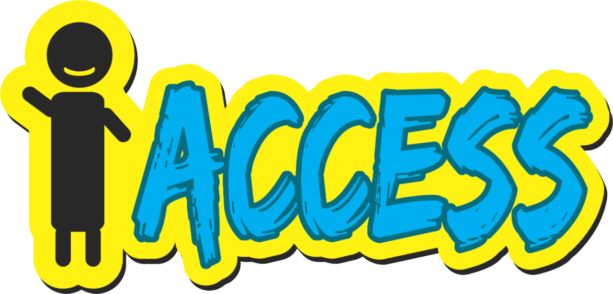

Visão Normal
Protanopia / Falta Total da Cor Vermelho
Deuteranopia / Falta Total da Cor Verde
Tritanopia / Falta Total da Cor Azul
Protanomalia / Falta Parcial da Cor Vermelha
Deuteranomalia / Falta Parcial da Cor Verde
Tritanomalia / Falta Parcial da Cor Azul
Monocromacia / Acromático
Monocromacia do Cone Azul / Acromatopsia